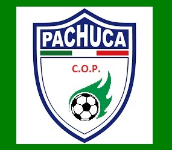
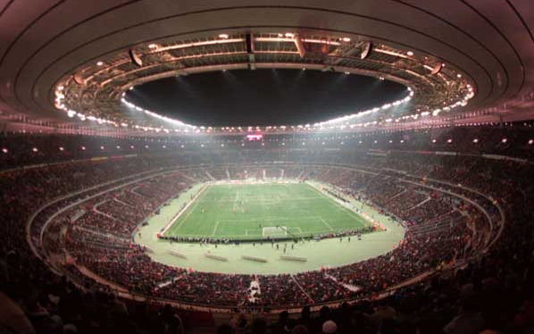

Site Officiel du Club Organisateur du Mondial de Pachuca
Hotel
Merary´s Suites and spa
la Fuente de Pachuca
Haeundae Grand Hotel
las Torres Blancas
el Presidente
Stade
Connexion
Contact
Stade Joe Louis
Capacite d'accueil
55 000
Acces
Auto et autobus
Environnement
Information
Pres du centre ville
Ciel ouvert
Toit ovale
Gazon naturel
Stade Joe Louis
Ce stade est situe pres du centre-ville, ayant une capicite de 55 000 visiteurs, il a un toit a ciel ouvert, oval et du gazon naturel. Il est accessible en auto et autobus.
